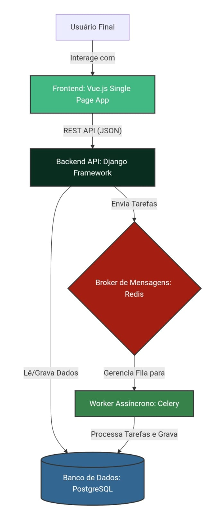
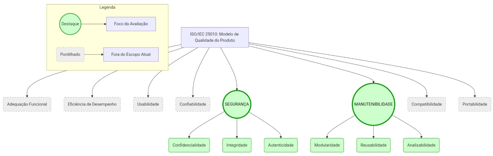

Fase 1: Resultados Esperados
Visão Geral
Esta seção descreve os resultados esperados ao final da Fase 1 (Definição dos Requisitos de Avaliação da Qualidade). Os resultados servirão como base para as próximas fases e serão documentados tanto nesta GitPages quanto no relatório técnico a ser enviado ao Moodle.
Resultados Esperados
1. Requisitante e Partes Interessadas
O mapeamento estruturado das partes interessadas reflete as necessidades reais do contexto acadêmico do AcheiUnB e dita a priorização das características de qualidade da avaliação.
| Parte Interessada | Papel e Necessidades |
|---|---|
| Equipe de Qualidade (Requisitante) | Através da disciplina de Qualidade de Software, audita o sistema exigindo métricas rigorosas baseadas na ISO/IEC 25010. |
| Universidade de Brasília (Cliente) | Instituição que se beneficia do sistema para otimizar o fluxo de itens perdidos; exige respeito rigoroso à proteção de dados (LGPD). |
| Mantenedores e Comunidade (Fornecedores/Desenvolvedores) | Desenvolvedores atuando em ambiente acadêmico/Open Source; precisam de código limpo e infraestrutura modular. |
| Segurança e Recepção da UnB (Operadores) | Funcionários da universidade que registram e gerenciam os itens físicos através do painel do sistema. |
| Comunidade Acadêmica (Usuários Finais) | Estudantes e servidores que interagem com o sistema e trocam mensagens via chat. |
Além disso, a avaliação contempla dois focos principais de segurança:
- Segurança Profunda (SAST): mitigar vulnerabilidades críticas de credenciais expostas (Hardcoded Secrets).
- Segurança de Borda (DAST): configurar cabeçalhos de segurança essenciais no servidor, como CSP e Anti-clickjacking, além de corrigir o vazamento de recursos via CORS.
2. Descrição Estruturada do AcheiUnB
O AcheiUnB é um sistema voltado à devolução de pertences no campus FCTE da Universidade de Brasília, organizado em módulos que se comunicam entre si para garantir o funcionamento da aplicação.

Figura 1: Arquitetura do Sistema AcheiUnB (Vue.js, Django, Redis, Celery e PostgreSQL).
Nota de Implicação: Devido à conteinerização via Docker e ao uso de workers assíncronos (Celery), a avaliação atual foca na segurança da borda da API e na análise estática do código, deixando métricas de desempenho de rede externa fora deste escopo.
Módulos da Arquitetura
- Módulo de Apresentação (Frontend)
- Desenvolvido em Vue.js.
- Utiliza Vite como ferramenta de build e desenvolvimento.
- Utiliza Tailwind CSS para estilização da interface.
-
Responsável por:
- Exibir as telas da aplicação;
- Permitir a interação do usuário com o sistema;
- Renderizar informações vindas da API.
-
Módulo de Lógica e Integração (Backend)
- Desenvolvido em Python com Django REST Framework.
- Atua como a API principal do sistema.
-
Responsável por:
- Centralizar as regras de negócio;
- Gerenciar autenticação de usuários;
- Controlar permissões de acesso;
- Integrar o frontend com os dados persistidos.
-
Módulo Assíncrono e Mensageria
- Suporta a funcionalidade de chat em tempo real.
- Utiliza Django Channels e WebSockets.
- Conta com apoio de:
- Workers do Celery;
- Filas em Redis.
-
Responsável por:
- Comunicação em tempo real;
- Processamento assíncrono;
- Suporte a tarefas que não precisam ser executadas diretamente na requisição principal.
-
Módulo de Persistência e Orquestração
- Utiliza PostgreSQL como banco de dados.
- A infraestrutura é empacotada e isolada com Docker.
- A orquestração dos serviços é feita via Docker Compose, por meio do arquivo
docker-compose.yml. - Responsável por:
- Armazenar os dados da aplicação;
- Organizar os serviços necessários para execução do sistema;
- Facilitar a reprodução do ambiente de desenvolvimento.
3. Modelo de Qualidade e Características Escolhidas
O modelo adotado baseia-se na norma ISO/IEC 25010 (SQuaRE).
Conforme exigido pelas premissas iniciais do projeto, a avaliação concentra-se exclusivamente em características intrínsecas e internas do código.

Figura 2: Adaptação do Modelo ISO/IEC 25010. As características em destaque (verde) representam o escopo da avaliação atual. As demais foram suprimidas pontualmente para focar nas necessidades mais críticas dos stakeholders e na segurança dos dados (LGPD).
3.1. Segurança (Security)
-
Prioridade: Alta.
-
Justificativa: O sistema processa dados acadêmicos sensíveis e chats privados.
-
Falhas de segurança podem permitir:
- Sequestro de contas;
- Extração de chaves de infraestrutura.
-
Critério e Aplicação: Avaliada de forma dupla:
-
Visão SAST (SonarCloud - Análise Estática):
- A análise profunda do código revelou um cenário crítico de exposição de credenciais (Blockers).
- Foram detectadas senhas comprometidas escritas diretamente nos arquivos de teste do backend:
test_views.py;test_serializers.py;test_models.py.- Também foi identificado vazamento da Django Secret Key no arquivo
settings_production.py. - Além disso, houve exposição indevida de uma chave privada de certificado:
localhost.key.
-
Visão DAST (OWASP ZAP - Análise Dinâmica na porta 5173):
- Foram mapeados:
0alertas de Risco Alto;3alertas de Risco Médio;-
5alertas de Risco Baixo. -
Risco Médio:
- Configuração sistêmica insegura de CORS, permitindo origens forjadas;
- Ausência de Política de Segurança de Conteúdo:
CSP Header Not Set;
-
Ausência de proteção contra clickjacking:
Anti-clickjacking Header;X-Frame-Options.
-
Risco Baixo (Hardening):
- Falta de cabeçalhos contra ataques paralelos:
Cross-Origin-Resource-Policy;Cross-Origin-Embedder-Policy;X-Content-Type-Options.
3.2. Manutenibilidade (Maintainability)
-
Prioridade: Alta.
-
Justificativa: A alta complexidade da stack tecnológica e a rotatividade de desenvolvedores exigem que o sistema seja altamente compreensível para garantir sua evolução nos próximos semestres.
-
Critério e Aplicação: Foco nas subcaracterísticas de:
- Analisabilidade;
- Modificabilidade;
-
Testabilidade.
-
Visão SAST (SonarCloud):
- A varredura identificou 184 apontamentos abertos.
- A dívida técnica total acumulada foi de 2.270 minutos, aproximadamente 37,8 horas.
- A Analisabilidade é prejudicada por uma forte sobrecarga cognitiva.
- Componentes Vue críticos atingiram pontuações de complexidade ciclomática de
27, quando o limite aceitável é15: Form-Found.vue;-
Form-Lost.vue. -
Também foram identificados problemas como:
- Incidência de código duplicado no backend;
- Literais de e-mail repetidos;
- Mensagens de erro repetidas;
- Falta de higiene de código;
- Arquivos CSS vazios;
- Imports declarados, mas não utilizados;
- Variáveis declaradas, mas não utilizadas.
4. Escopo, Profundidade e Objetivos de Avaliação
- Objeto de Avaliação: A instância do frontend em execução (
http://localhost:5173) e a base de código integral do repositório. -
Foram considerados:
- Arquivos Vue;
- Rotas Python/Django;
- Arquivos de testes.
-
Escopo: Avaliação estática e dinâmica de qualidade e segurança.
- A avaliação segue uma abordagem de Shift-Left Security.
-
O objetivo é garantir:
- Auditoria estrutural do código;
- Auditoria da camada de rede;
- Identificação antecipada de falhas de segurança e qualidade.
-
Profundidade: Análise em duas camadas:
-
Camada de superfície e integração (DAST):
- Validou a blindagem dos endpoints contra injeções de terceiros.
- Identificou problemas relacionados à ausência ou má configuração de:
- CSP;
- CORS.
-
Camada profunda (SAST):
- Realizou uma varredura rigorosa de código.
- Detectou falhas sistêmicas, como:
- Credenciais hardcoded;
- Código espaguete no frontend.
-
Relação com Avaliações Futuras e Plano de Ação: O sucesso desta etapa dita as prioridades imediatas do projeto.
-
As ações prioritárias são:
- Remover as chaves expostas;
- Configurar os cabeçalhos de segurança;
- Tratar requisitos bloqueantes antes da evolução do projeto.
-
Cabeçalhos de segurança prioritários:
- CSP;
X-Frame-Options.
-
A configuração pode ser realizada via:
- Nginx;
- Django Middleware.
-
Esses ajustes são necessários antes que o projeto avance de forma segura para:
- Testes funcionais;
- Homologação.
5. ODS Relacionados
O AcheiUnB, em sua missão e operação técnica, alinha-se aos seguintes Objetivos de Desenvolvimento Sustentável da Agenda 2030 da Organização das Nações Unidas (ONU):
5.1. ODS 12 - Consumo e Produção Responsáveis
-
Justificativa: Ao facilitar o encontro e a devolução de itens perdidos na universidade, a ferramenta incentiva a economia circular, reduzindo a necessidade de os estudantes substituírem ou comprarem novos produtos desnecessariamente.
-
Indicador Relacionado: Meta 12.5 (Reduzir substancialmente a geração de resíduos por meio da prevenção, redução, reciclagem e reuso).
5.2. ODS 16 - Paz, Justiça e Instituições Eficazes
-
Justificativa: Ao auditar proativamente (via SonarCloud e ZAP) o vazamento de chaves privadas e ausência de Security Headers, o software protege a privacidade e os dados de localização acadêmica, promovendo um ambiente digital seguro para a instituição.
-
Indicador Relacionado: Meta 16.6 (Desenvolver instituições eficazes, responsáveis e transparentes em todos os níveis).
Histórico de Versões
| Versão | Descrição | Data | Responsável |
|---|---|---|---|
0.1 |
Criação do template para Resultados Esperados da Fase 1. | 12/05/2026 | Júlia |
0.2 |
Adição das seções 1,2,3 e 4 dos Resultados Esperados da Fase 1 | 12/05/2026 | Tiago Antunes |
0.3 |
Adição da seção 5 (ODS Relacionados) dos Resultados Esperados da Fase 1 | 13/05/2026 | João Pedro Rodrigues Gomes da Silva |
0.4 |
Adição das imagens em Resultados Esperados da Fase 1 | 13/05/2026 | Marjorie Mitzi |